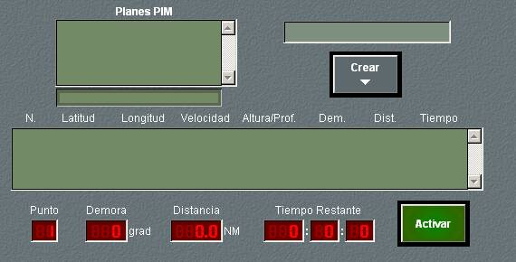

PIM

En el panel de detalle de planes PIM se muestra la lista de planes disponibles en la unidad, y para el plan seleccionado, se muestran sus datos. Desde este panel se pueden ejecutar las siguientes acciones:
- Seleccionar un plan. Eligiendo un plan de la lista y pulsando el botón Seleccionar, se observan los datos del plan, con la siguiente información:
- Número del Tramo: Número consecutivo asignado por el simulador, hasta 25, para designar cada tramo del plan.
- Latitud y Longitud del punto inicial del tramo.
- Velocidad: Velocidad a la que la unidad recorrerá el tramo.
- Altura / Profundidad: Altura o profundidad en pies (con signo), para unidades aéreas o submarinos, respectivamente.
- Rumbo del Tramo: Rumbo en grados del tramo.
- Distancia: Distancia en millas entre el punto inicial y el punto final del tramo.
- Tiempo: tiempo en horas que empleará la unidad para recorrer el tramo.
- Crear un plan PIM, pulsando el botón Crear. Mediante este botón, sobre la Pantalla Táctica se mostrará una Herramienta de Dibujo con la que se podrá crear gráficamente el Plan PIM, incluyendo los siguientes parámetros por tramo:
Parámetros por tramo del Plan PIM:
- Ejecutar el plan seleccionado, pulsando el botón Activar, la unidad recorre automáticamente el plan, que se dibuja en la pantalla táctica. Durante la ejecución del plan, pulsando de nuevo el botón Activar (cuya leyenda ha sido sustituida por Cancelar), se produce la cancelación del plan, quedando la unidad con el rumbo y velocidad que tenía en ese instante. Esta maniobra no se ejecuta si la unidad tiene destruida la maquinaria o el timón, si carece de combustible (o batería en el caso de submarinos) o si está en Base.